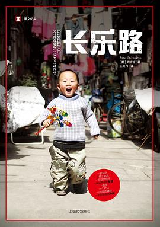

《长乐路》

总体观点
长乐路（Street of Eternal Happiness）全长不过三公里，横跨上海旧法租界与繁华市中心，两旁梧桐掩映、咖啡馆与老弄堂交错。驻华记者史明智在此居住了十余年，他选择用放大镜聚焦这条街上的普通小人物，将整座街道打造成观察巨变中国社会肌理的微观舞台。
书中记录了形形色色在此谋生的小人物：卖葱油饼与山东水饺的外来打工夫妇、热衷投资P2P暴雷金融产品的退休阿姨、在体制内郁郁不得志转向禅修的网店老板CK、在阁楼里发现文革家书的打捞者，以及麦琪里因城市拆迁而抗争的动迁户。每个人都在拼命追逐各自的“中国梦”，却又不可避免地撞上体制、资本与历史的坚硬高墙。
《长乐路》以极其敏锐、充满温情而又克制冷静的叙事，拼贴出当代中国城市化最真实的心灵图谱：它既有普通人向死而生、绝不服输的生存智慧与打拼野心，也有在急剧变迁中遭遇社会保障缺失、金融诈骗陷阱与历史创伤记忆时的无助与迷茫。
核心观点 共 6 条
-
1. 一条街就是整个中国的全息投影：折射时代巨变下小人物的悲欢
宏大的经济统计数字往往抹平了普通人的真实面孔。通过一条街道上邻居们的柴米油盐与打拼史，能够看清中国社会转型最幽微的脉搏。
例 ·长乐路上既有售价千万的民国花园洋房和前卫买手店，也有合用公共厨房马桶的逼仄亭子间，贫富与阶层的折叠在此一览无遗。 -
2. 外来打工者的“中国梦”：用每天16小时的油烟劳作给下一代铺路
来自山东农村的赵氏夫妇在长乐路开简陋小水饺店，节衣缩食睡在逼仄阁楼上，支撑他们的唯一精神支柱是攒够彩礼让儿子娶妻生子在老家起楼。
例 ·水饺店夫妇每天天不亮就起床和面剁馅，双手被开水和冷水泡得变形，他们一碗几块钱几块钱地攒下几十万积蓄，全部汇回老家建新房。 -
3. 金融创新的阴暗面：民间非法集资与P2P泛滥洗劫了中老年人的养老金
在银行低利率与财富焦虑驱使下，退休的傅姨被高收益金融骗局诱惑，不仅投进毕生积蓄还拉上所有亲友，最终在爆雷跑路中血本无归。
例 ·傅姨深信某投资公司宣称的“零风险、月息两分”高科技生态神话，在平台负责人被捕后陷入绝望，从热情的推销者沦为奔走维权的维权老人。 -
4. 城市更新与拆迁博弈：动迁户在巨额补偿期待与记忆铲除间的拉锯
麦琪里地块拆迁历经十余年僵局，老住户们为了在房价暴涨的上海争得体面的补偿奋起抗争，但最终仍难以阻挡推土机对城市历史文脉的碾碎。
例 ·老冯坚守在断水断电的废墟老屋里做钉子户，四周早已被开发商拆成瓦砾堆，他的抗争既是为了合理赔偿，也是舍不得几代人扎根的市井温情。 -
5. 体制内青年的精神危机与自我追寻：从体制齿轮到遁入内省修行
店主CK曾是一名体制内受人羡慕的白领，但枯燥的官僚体制让他感到窒息；辞职开服装店受挫后，他转向手风琴、佛法与现代修行寻找自救。
例 ·CK拒绝了父母安排的体制内铁饭碗，独自背着背包远赴西藏和欧洲寻找生命答案，代表了当代年轻一代对物质成功单一标准的深刻反叛。 -
6. 历史创伤的隐秘回响：被封存在弄堂旧信箱里的家族秘密
在一栋旧洋房阁楼拆修时意外发现的一盒六十年代文革家书，串联起知识分子家庭在政治狂风暴雨中的生离死别与当代后人的遗忘反思。
例 ·泛黄信件中记录了当年长乐路住户在动荡年代的相互揭发、劳改营里的思念与未寄出的遗书，揭示了光鲜摩登的大都市脚下沉睡的沉重历史。
全书结构 4 部分 官方目录已核验
-
第1-4章 街区登场、麦琪里动迁与弄堂早点铺的奋斗
穿透长乐路的梧桐树影，引出体制叛逆者CK的网店、麦琪里动迁废墟里老冯的坚守，以及山东水饺店赵老板夫妇每天从清晨四点开始的油烟营生。
例 ·长乐路109号的葱油饼摊前排起长队，金黄酥脆的香气飘散在街道上，小店夫妻俩用布满烫伤痕迹的手快速翻动铁板，用最朴素的勤劳站稳脚跟。 -
第5-7章 阁楼家书、傅姨的暴富神话与积攒老婆本
揭开弄堂阁楼里尘封数十年的泛黄信件秘密；记录退休教师傅姨如何被“麦道财富”高息诱饵捕获，以及外来务工家庭为儿子筹备婚礼的沉重现实。
例 ·傅姨兴奋地向作者展示她参加的高端投资推介会门票，桌上摆着假冒的海外诺奖学者合影与高科技生态画册，浑然不知这是一家庞氏骗局。 -
第8-11章 文艺青年CK、麦琪里梦碎与金融爆雷逃离
跟踪CK追求独立设计品牌的艰辛波折；麦琪里钉子户在推土机轰鸣中最终妥协签署动迁协议；金融投资平台轰然倒塌，傅姨等受害者踏上漫漫维权路。
例 ·维权阿姨们聚集在经侦支队大门前高举合同大哭，当初承诺还本付息的年轻业务员早已关机失联，几十年工龄换来的微薄退休金化为乌有。 -
第12-15章 乡村婚礼、CK的觉悟与中国梦的真谛
作者随水饺店老板回山东农村参加耗尽全家积蓄的盛大婚礼；CK在音乐与内省中实现心灵和解；全书总结长乐路居民在时代巨浪中的韧性与梦想边界。
例 ·山东农村婚礼宴席摆开几十桌，新郎新娘按传统叩拜长辈，赵氏夫妇看着用长乐路十年汗水换来的新房与儿媳妇，眼角泛起欣慰而疲惫的泪光。